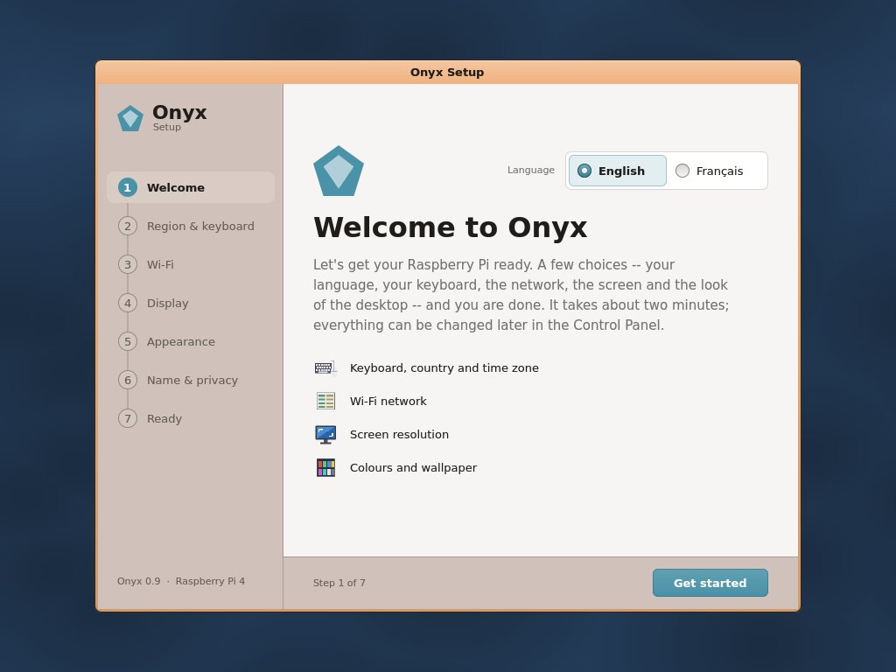

Onyx chez vous, en quatre étapes.
Il vous faut un Raspberry Pi 4 et une carte microSD. Le reste, Onyx s’en occupe.
Bientôt disponible
Ce qu’il vous faut
- Un Raspberry Pi 4
- Une carte mémoire microSD
- Un écran HDMI et son câble micro‑HDMI
- Un clavier et une souris USB
- Une connexion Wi-Fi, pour le web et les mises à jour
En option : une manette USB pour les jeux, un casque USB, une imprimante réseau.
La carte doit être au format FAT32. Le Raspberry Pi 5 n’est pas encore pris en charge.
Les quatre étapes
Préparez la carte
Téléchargez Onyx et copiez tout son contenu sur la carte microSD. Aucun logiciel d’installation n’est nécessaire : c’est une simple copie de fichiers.
Branchez et allumez
Glissez la carte dans le Raspberry Pi, branchez l’écran, le clavier et la souris, puis l’alimentation. Onyx démarre.
Laissez-vous guider
Au premier démarrage, l’assistant vous demande votre langue, votre clavier, votre réseau Wi-Fi, la taille de l’écran et vos couleurs. Tout se change plus tard dans le Panneau de configuration.
Complétez et restez à jour
Ouvrez le Gestionnaire de paquets pour installer Jet Browser et les autres applications proposées. Ensuite, Onyx vérifie les mises à jour chaque jour et vous prévient.

Bon à savoir
Faut-il effacer ma carte ?
Utilisez une carte dédiée à Onyx : c’est elle qui fait démarrer le Raspberry Pi. Vos fichiers personnels peuvent aussi vivre sur une clé USB.
Puis-je revenir en arrière ?
Oui. Onyx vit entièrement sur sa carte : remettez votre carte habituelle dans le Raspberry Pi et rien n’a changé.
Mes fichiers sont-ils lisibles ailleurs ?
Oui. La carte et les clés USB utilisent les formats courants de Windows et des appareils photo, et vos documents sont enregistrés en .docx, .xlsx, .pptx, PDF, PNG ou JPEG.
Captures d’écran en anglais.